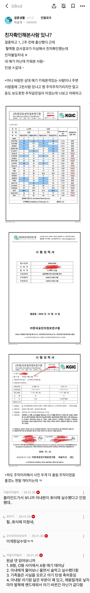

혈액형이 달라 친자검사 해본 남자
댓글
실수는 말이안되지 강간이라고 했어야지
뭐?
알파남이라 명사수였나봐
술먹고 실수라고하는데 남자들술먹고 실수해서 여자랑 성관계했다치고 그과정이 실수가 맞는지 생각해봐라
걍꼴리는거지 실수가아님
내가보기엔 걸린게 실수같은데
실수같은소리하네 걸레년이
ㅋㅋ 이번에 아들낳고 내가 B 아내가 A인데 혈액형 O라길래 순간 멍 했다가 정신차림 ㅈㄴ ㅋㅋ
가능하잖아 ㅋㅋ
실수 = 술먹고 모텔가서 씻고 양치하고 서로 애무하고 침대에서 뒹굴고 담배한번 피고 또 꼴려서 또 뒹굼.
씻 양 안하지 본능에 눈돌아간 상탠데
실수?
뭔 술병 넘어뜨린것도 아니고
침대에 나자빠뜨리고 옷 걷어올리고
브라끈 풀고 빤스내리고
혀 넣어서 키스 좀 조지고 유두도 쪽쪽 빨다가
발기 시켜서 삽입하고 허리 존나게 흔들고
체위 바꾸고 궁디 찰싹하고 사정까지 하는게 실수?
왕복 3000번짜리 실수에요~
회식때 ㅇㅈㄹ ..ㅋㅋㅋㅋㅋ
실수는 ㅈㄹ
음주운전도 10번하면 1번 걸리는것처럼 바람도 10번 피면 1번 걸린다
자기 자식 아닌게 왜 줌
오히려 여자쪽이 귀책사유라서 여자가 위자료 지급해야지